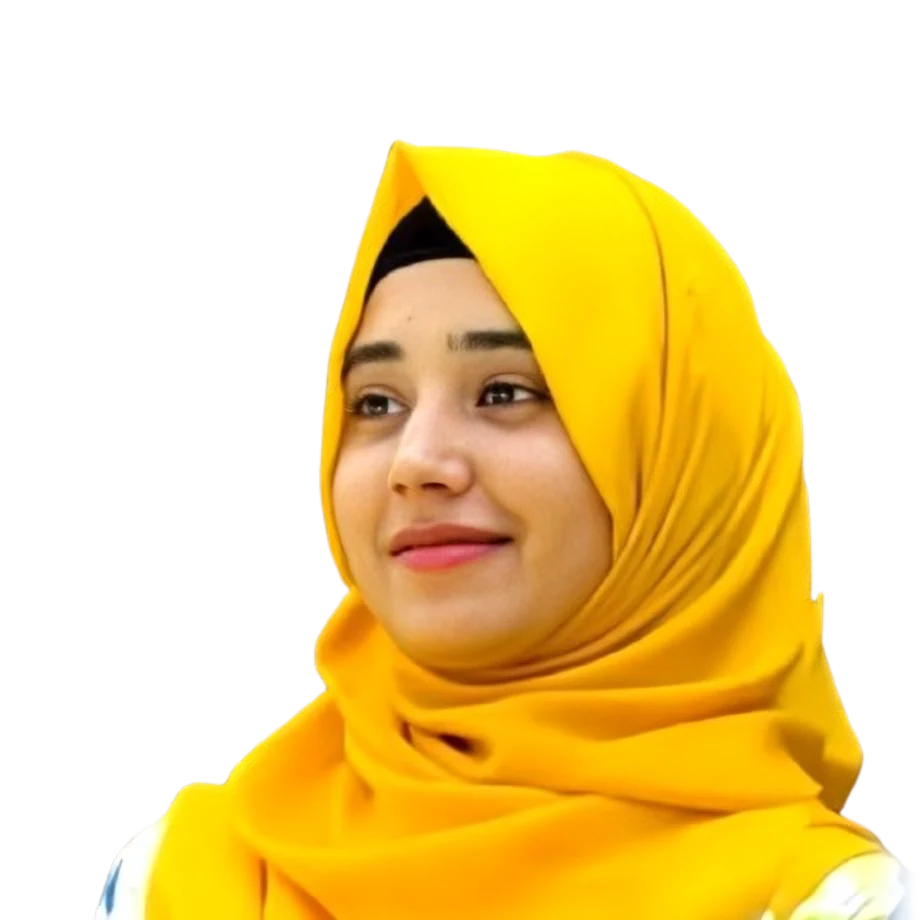
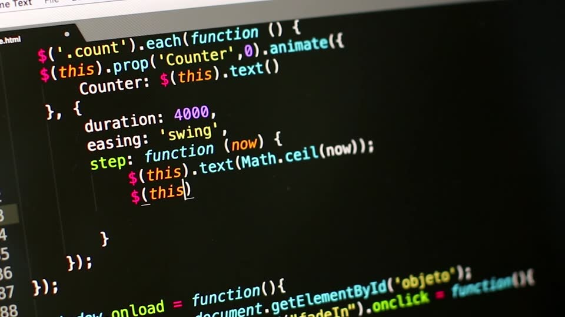

AI Engineer
Prismecs
Joined as an AI Engineer on 1 November 2026.
Hi, I’m
AI & Data Scientist

I build data pipelines, RAG assistants and LLM agents that run in production.
CurrentlyAI Engineer at Prismecs
Open to new roles
The thread through my work: taking AI from raw data to systems people rely on.
I’m an AI & Data Scientist who builds production AI agents, RAG pipelines, machine-learning systems and the data infrastructure underneath them.
I recently joined Prismecs as an AI Engineer. Before that, at Black Lion Innovations Group, I built FastAPI services and automated pipelines on GCP and AWS, shipped agentic RAG assistants, and ran collection systems that processed tens of thousands of records per run. Earlier, at LUMS BIRL, I built Python ETL pipelines and FastAPI services across eight clinical datasets, and cut end-to-end processing time by around 40% through PostgreSQL query and pipeline optimisation.
My focus is reliability: agents that stop for human approval, pipelines that catch bad schemas before they spread, and documents that are verified field by field rather than trusted.
University of Engineering and Technology (UET) Lahore, Sep 2021 – Mar 2025
CGPA 3.58 / 4.0AI Engineer at Prismecs
Redis Associate Developer certification, and coordinator at the 3rd International AI Championship (AIEF / LUMS)
Four roles with one thread: taking AI and data work from a notebook to something that runs on a schedule and is monitored.
Prismecs
Joined as an AI Engineer on 1 November 2026.
Black Lion Innovations Group
Production AI services and automated data pipelines across GCP and AWS, plus the agentic RAG and music-intelligence systems that run on top of them.
LUMS – BIRL (research)
ETL and machine-learning workflows over eight clinical datasets, with the query and pipeline optimisation that made larger datasets practical.
LUMS – Prof. Abdul Basit
An end-to-end document-verification platform for Spanish energy-efficiency audit claims, covering 11 document types.
Each project explains the problem, how I built the solution, and what it achieved. Click any screenshot to see it full size.
More on GitHub. Including a knowledge-distillation project that trains a compact student network from a larger ResNet teacher for CIFAR-100 image classification.
View the projectGrouped by the kind of system they help me build.
Click a certificate to view it. Verified credentials link to the issuer.

I’m open to AI engineering, data science and backend roles, and to consulting on agent systems and document-processing pipelines.
Available for new work